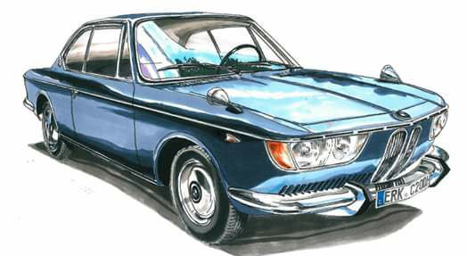

artistic depiction of a 2000cs/c courtesy of Marcello MigliavaccaRare Car
There were only roughly 13,000 BMW typ120s produced from 1965-69. Compare that to 100,000 BMW 2002s from 1968-76. Roundel columnist Mike Self notes in the February 2018 edition of the magazine that "the last survival estimate [he] saw for the 2002 in the U.S. is roughly 15,000 cars." Using similar math to predict typ120 survivors would provide a number at roughly 2,000 cars. I suspect the number may actually be lower than that.
From my personal observations, unlike the e9 CS models like the 3.0cs, people just don't feel too inspired to restore or maintain the typ120s. This does seem to be changing though. The car does have its critics. Some refer to the two long kidney grills as "beaver teeth" . Others comically describe the car as a "boat" or amphicar. At its debut at the Frankfurt Auto Show, critics noted the flat wrap -around head lamps with integrated indicators with a somewhat derogatory "slanted eyes" description. This combined with these cars' heightened propensity to rust (far worse than 2002s), and the survivor numbers are probably therefore much lower. I have a second "parts" 2000cs. When I removed the rocker covers I was astonished that the car essentially has no rockers left. I'm not really sure what I will do with the car, but it is seemingly rusted beyond repair.
The e9 Forum Registry of enthusiast owners worldwide for all BMW CS models from 1965 - 1975 has a total of 2,639 cars registered. Out of that number only 76 are for the typ120 CS models which includes "on the road, being restored, parts car". This is not an 100% accurate indication of true cars out there because these are only enthusiasts who choose to join and register through the forum. Nonetheless it is a helpful indicator of how rare the typ120s are comparatively.
On a personal level, I have seen only five typ120s in the past 40 years. Just five. Three of those five were at major vintage BMW gatherings like the Vintage in North Carolina with its booming 500 plus car participations.